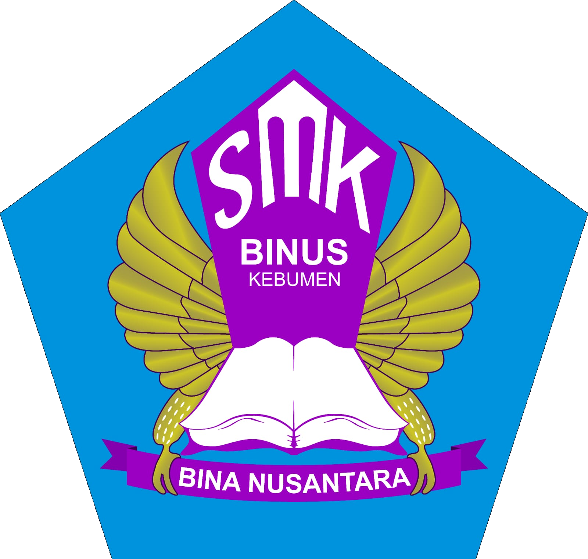

FORM PENDAFTARAN SPMB
SMK BINA NUSANTARA KEBUMEN
TAHUN AJARAN 2027/2028
SPMB
2027/2028
A. IDENTITAS CALON SISWA
No. Pendaftaran
Tanggal Daftar
NISN
NIK
Nama Lengkap
Tempat Lahir
Tanggal Lahir
Jenis Kelamin
-- Pilih --
Laki-laki
Perempuan
Agama
-- Pilih Agama --
Islam
Kristen
Katolik
Hindu
Buddha
Konghucu
Berat Badan (kg)
Tinggi Badan (cm)
Alamat
No. HP / WhatsApp
B. PILIHAN JURUSAN
Pilihan Jurusan 1
-- Pilih Jurusan --
Akuntansi dan Keuangan Lembaga
Teknik Otomotif dan Alat Berat
Desain Komunikasi Visual
Agribisnis Tanaman Pangan dan Hortikultura
Pilihan Jurusan 2
-- Pilih Jurusan --
Akuntansi dan Keuangan Lembaga
Teknik Otomotif dan Alat Berat
Desain Komunikasi Visual
Agribisnis Tanaman Pangan dan Hortikultura
C. DATA ORANG TUA / WALI
Nama Ayah
Pekerjaan Ayah
Nama Ibu
Pekerjaan Ibu
Nama Wali
Hubungan Wali
Alamat Orang Tua / Wali
No. HP Orang Tua / Wali
Asal Sekolah (SMP/MTs)
D. DATA TAMBAHAN
No. Kartu Keluarga
Anak Ke
Jumlah Saudara
Penerima KIP
Tidak
Ya
Keterangan
💾 SIMPAN DATA
↺ RESET
🖨 CETAK
← KEMBALI KE WEBSITE SEKOLAH
👨💼 ADMIN SPMB